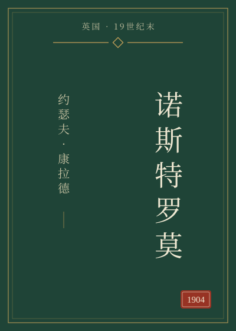
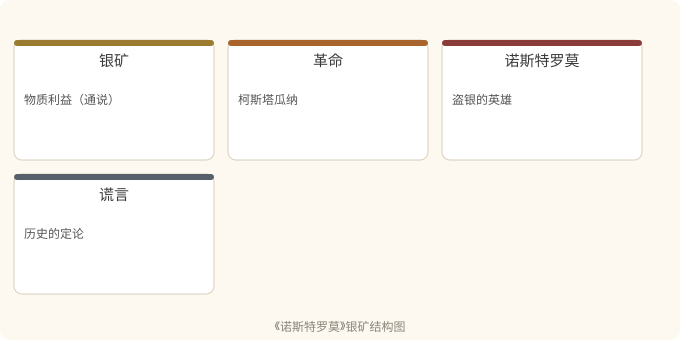

诺斯特罗莫
一、基本信息
| 作者 | 康拉德 |
|---|---|
| 成书/出版 | 1904年出版（作者页 B124 口径：诺斯特罗莫（1904）） Joseph Conrad — Encyclopaedia Britannica（百科全书） |
| 国别/地区 | 英国 |
| 时代 | 近代 · 19世纪末 |
| 体裁 | 长篇小说 |
| 语言 | 英语 |

《诺斯特罗莫》银矿结构图（主题·结构图）
二、创作背景
作者页（B124）：康拉德 major_works 载'吉姆爷（1900）、诺斯特罗莫（1904）、间谍（1907）'（B124 作者页定位，详见 heianddixin 条核对）。
题材（通说）：南美虚构国柯斯塔瓜纳的银矿革命——物质利益的腐蚀。
三、内容脉络
桑·托梅银矿与革命——'物质利益'的胜利（通说待核）。
诺斯特罗莫的盗银与自我毁灭（通说待核）。
四、主要人物表
| 人物 | 身份 | 说明 |
|---|---|---|
| 诺斯特罗莫 | 码头领袖 | '物质利益'的牺牲者（通说待核） |
| 查尔斯·古尔德 | 矿主 | 理想主义矿主（通说待核） |
五、主题与艺术特点
- '物质利益'（Material Interests）的支配（通说）。
- 革命的反讽（通说）。
- 多视角全景叙事（通说待核）。
六、影响与评论
- 作者页：康拉德政治三部曲之一（B124 作者页口径）。
Joseph Conrad — Encyclopaedia Britannica（百科全书） - 被许多评论家视为康拉德最伟大的作品（通说待核）。
Joseph Conrad — Encyclopaedia Britannica（百科全书）
七、阅读建议
难点
- 虚构南美国度的人名地名。
- 多线叙事。
- 《诺斯特罗莫》（人民文学出版社/上海译文版本，通说待核）。
- 英文原版（公有领域）。
先《吉姆爷》后本作。
八、待核实
- 1904年出版（Harper & Brothers说）核对。
- 诺斯特罗莫/古尔德/德考迪人名核对。
- '最伟大作品'评论出处待核。
本页主要来源
康拉德的其他收录作品：黑暗的心